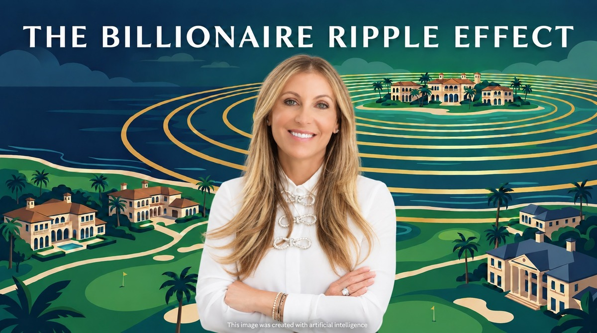

When the 2026 Forbes World's Billionaires List was released in March, the Palm Beach Daily News counted at least 65 billionaires with strong residential ties to the Town of Palm Beach — a combined fortune of roughly $649 billion, up from $620 billion the year before. At the top of the list, for the first time, sits Interactive Brokers founder Thomas Peterffy at $82.9 billion, edging out Julia Koch and family at $81.2 billion.
Pause on the scale of that for a moment. The Town of Palm Beach has about 9,400 year-round residents. That works out to roughly one Forbes billionaire for every 140 people in town. New York City — with nearly nine hundred times the population — has only about twice as many billionaires. There is simply no other municipality in America with this concentration of private wealth.
An honest note on the number: "residential ties" is the operative phrase. Some of these 65 keep their primary residence elsewhere, and stricter primary-residence methodologies count fewer. But even under the most conservative counts, Palm Beach ranks among America's top five billionaire cities. The concentration is real however you measure it.
Here is what most coverage misses: a billionaire buys one house. The market is made by the thousands of affluent households moving in beneath them.
The combined Palm Beach–West Palm Beach area is now home to roughly 11,500 millionaires and 78 centimillionaires — households with $100 million or more in investable wealth — and the millionaire population grew 112% between 2014 and 2024, making it one of the fastest-growing wealth hubs in the world, according to Henley & Partners.
The IRS migration data is even more striking. Between 2019 and 2023, Palm Beach County received a net inflow of $22.7 billion in adjusted gross income from domestic migration — the largest of any county in the United States. In 2023 alone, the net inflow was over $3 billion. The households moving in reported average incomes of roughly $178,000; the households moving out averaged about $98,500. Read that again: the county can lose residents on net and still get dramatically wealthier, because every exchange trades a median household for an affluent one.
And this is no longer just people. Over the past five years, more than 140 companies have relocated or expanded in Palm Beach County — Citadel, Goldman Sachs, BlackRock, Elliott Management, Point72 among them — bringing over $1.1 billion in capital investment and more than 13,000 jobs. When the firms, family offices, attorneys, and wealth managers follow the wealth, the migration stops being a collection of second homes and becomes an economy.
Four forces anchor this shift structurally. Florida still has no state income tax, which for a high earner can fund a very expensive home all by itself. Palm Beach island is a fourteen-mile barrier island where prestige inventory cannot be manufactured — island values are up 118.2% over five years, the highest appreciation of any major Florida city. More than three-quarters of island purchases are all-cash — approaching 90% at the $10 million-plus tier — meaning there is no subprime-style leverage to unwind. And wealth attracts the services that attract more wealth: private banking, healthcare, aviation, schools, culture.
Durable does not mean frothless. Monthly medians in thin markets swing wildly on a handful of sales, luxury fortunes are stock-market-linked, and insurance costs are a genuine and rising drag. The honest read: a real structural repricing, with some individual properties still priced on headlines rather than comparables.
So how does a billionaire island 25 miles north lift values in Boca Raton? Through what economists call substitution — and what buyers call relative value.
A buyer touring Palm Beach's $20 million to $50 million market looks at a $5 million Boca Raton club estate and sees a bargain. And critically, the spillover buyer is almost never a billionaire. It is the retired executive with $10 million to $50 million. The business owner who just sold the company. The hedge fund and private equity professionals staffing "Wall Street South." The attorneys and physicians who serve the ultra-wealthy. The adult children and extended family of Palm Beach residents. One billionaire buys one $50 million property; hundreds of multimillionaires support an entire $3 million to $10 million market. That is precisely the market Boca Raton's country club communities serve.
Boca Raton and the wider Palm Beach County corridor sit directly in the path of this migration, because the club communities here combine three things the spillover buyer wants and cannot easily assemble elsewhere: a fixed, gated neighborhood of estate-scale homes, immediate championship golf with no waitlist limbo, and a central location between Palm Beach and Fort Lauderdale.
The scarcity shows up plainly in the numbers. Across the twenty-one club communities we track, there are 243 homes actively listed today against 803 closed sales so far this year — barely a quarter of a year's absorption standing on the market at any one time. Individual communities are tighter still. The Polo Club has eight homes available against seventy-seven closings, roughly one listing for every ten sales, the fastest pace of any community on our list. Boca West shows twenty-six against 210. These are not markets with surplus to work through.
Take St. Andrews Country Club as a worked example. Thirteen homes are listed there today against twenty-seven sales this year — a community turning over a small single-digit share of its homes annually, while its board raises the cost of entry.
Because that is the other half of the signal: the price of admission itself. Per brokerage reports, St. Andrews' mandatory equity initiation — roughly $200,000 a few years ago — rises to $500,000 effective September 1, 2026, plus a $50,000 POA contribution. It is not an outlier. The same reports have Boca West's joining fee rising from $150,000 to $215,000 and Woodfield's full equity from $225,000 to $300,000, both this autumn. Clubs across the county do not raise their price of admission in unison into a soft market. Fee schedules are not published by the clubs, so confirm current figures directly before contracting.
But this market rewards discipline, not wishful pricing. The mandatory equity check narrows the buyer pool, so club-community homes take longer to sell than broader Boca luxury, and value is bifurcating sharply: new or comprehensively renovated estates command premium pricing, while dated homes on ordinary lots face real negotiation. For sellers, that means sharp pricing and honest condition assessments. For buyers, it means the total cost of entry — home, membership, dues, taxes, insurance — should be underwritten from day one.
Billionaires make the headlines. Multimillionaires make the market. Palm Beach's $649 billion is the gravitational center of an unprecedented wealth migration, but the force that moves Boca Raton real estate is the cascade beneath it — the 11,500 millionaires, the $22.7 billion in migrated income, the 13,000 new jobs — flowing south in search of space, golf, security, and relative value. Boca Raton and Palm Beach County's country club communities are not adjacent to that story. They are where it lands.
Samantha Gornstein is a Licensed Real Estate Salesperson with The Edmund Bogen Team at Douglas Elliman Real Estate in Boca Raton, Florida. She specializes in Boca Raton's premier luxury gated communities, with a particular focus on The Polo Club, and brings data-driven market intelligence to buyers and sellers across the Boca / Delray / Palm Beach luxury corridor.
samantha@bogenhomes.com · 561-707-6607